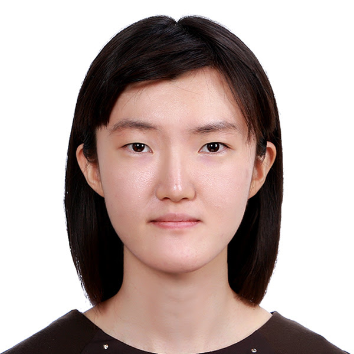

 Contact
Email: jeon.163@buckeyemail.osu.edu
Office: 209, Math Tower
I will join the University of Georgia, Department of Mathematics as a Postdoctoral Research & Teaching Associate in August 2022. My postdoc supervisor will be William Graham. I have recently obtained my Ph.D. degree in Mathematics, under the supervision of David E. Anderson, from the Ohio State University in May 2022.
My interest is in algebraic geometry and combinatorial algebraic geometry, especially, singularities of algebraic varieties, the geometry of algebraic curves and their moduli, Brill-Noether type problem. Plus, I am pretty wide open to study arithmetic geometry.
Before coming to OSU, I earned a master degree in Mathematics at Seoul National Univ. and a Bachelor’s degree in Mathematics and Physics with the Golden Ring of Honor, Ranked 1st, from College of Natural Sciences at Kookmin Univ. A curriculum vitae is available on request.
Publications and Preprints [MathSciNet Profile]
- Euler characteristics of Brill-Noether loci on Prym varieties, in preparation.
- Mather classes of Schubert varieties via small resolutions, arXiv:2112.03136, submitted.
- Covexillary Schubert varieties and Kazhdan-Lusztig polynomials, arXiv:2112.06337, submitted.
- (Joint with D. Anderson, T. Ikeda, R. Kawago) The multiplicity of a singularity in a vexillary Schubert variety, arXiv:2112.07375, submitted.
- (Joint with D. Anderson, T. Ikeda, R. Kawago) Multiplicities of Schubert varieties in the symplectic flag variety,
Sém. Lothar. Combin. 82B (2020), Art. 95, 12 pp.
[Journal Version]
[PDF]
< Links
Jeon, Minyoung
This page was last updated on .